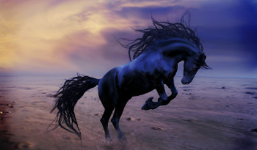

<DOCTYPE html>

<head>
   <meta charset="utf-8" />

<link rel="stylesheet" type="text/css" href="scl1.css">
</head>
<body>

   <h2>Eachtra air An Scolóig agus air an nGruagach Ruadh. 
    </h2>
<h3>Cuid a Dó</h3>
<div class="row">
  <div class="column" >
 
<p> 
D'fhan an Sgológ anns an riocht sin i ngar d'uair an chluig, acht air mhúsgladh dho, tháinic sé chuige féin arís ó'n g-criothnughadh uathbhásach bhí 'n-a chroidhe le scanradh roimh an m-breith ádhbhal d'fhógair an Gruagach Ruadh do chur mar leathtrom air.
</p>
<p>
“Ní dhéanfad-sa aon dochair duit,” ar an Gruagach Ruadh, air a raibh feuchain gruama. “Preab ad' shuidhe go 'neosfad duit na geasa chuirfidh me ort.
</p>
<p>
D'eirigh an Sgológ 'n a sheasamh, agus dubhairt, “Má's áil leat é, innis dam cread iad féin ó nach bh-fuil dul uatha agam.”
</p>

<p>
“Is fíor,” ar an Gruagach, “go g-caithfidh tu stríocadh dam 
reachd-sa anois; agus ná bidheadh aon mhearughadh ná 
mearachuimhne ort gur b'iad so m' orduighthe — fios d'fhaghail 
dam cia ghoid an long óir, cia mharbh an t-Athach Ó Dubhda, 
agus an cloidheamh soluis tá ag an nGaisgidheach ag anns 
an Domhan t-Soir do bheith agat romham air an láthaireach 
so lá agus bliadhain ó n-diu. Slán leat. Is iomdha bóthar 
cam agus díreach rómhat."
</p>
<p>
Is le croidhe duairc chuaidh an Sgológ a bhaile. D'aithin 
a bhean, gan mhoill, go raibh brón éigin ag goilleamhuin air, 
agus bhí amhrus láidir aici gur b'é gangaideacht an Gruagaigh 
Ruaidh do thug fá n-deara dho gan bheith níos meisneamhla. Do 
cheistigh sí é air an modh 'nar chaith sé a aimsir ó d'fhág sé 
an teach, no cread d' éirigh dho go raibh sé chomh meata sin. 
Budh fhiosach do a bhean bheith ceann-radharcach go leór, 
agus nách mbeidheadh aon mhaitheas do an fírinne sheunadh uirri. 
Do luaidh sé dhi cread do thuit amach idir é féin agus an 
Gruagach Ruadh.
</p>
<p>
“Is é so,” ar sé, “fáth mo chráidhteachta.”
</p>
<p>
“Dá nglacfá mo comhairle-se,” ar sí, “ní bheidheadh a 
leithéid sin de sgeul le innsin agat, óir is maith do bhí fios 
agam gur beag an fághaltas do gheabhfá air an nGruagach Ruadh, 
agus nách raibh de ghnó air siúbhal aige ó thosach go deire acht 
ag cur a líontán air innil fád' chomhair. Is eólach dam-sa slighe 
air a bhfeudfadh tu teacht saor ó n-a gheasaibh, acht is ríachdanach 
duit bheith muinighineach asat féin agus do dhithchioll do dheunamh 
go bríoghmhar.”
</p>
<p>
Annsan do mhínigh sí dho na cúrsaighe tré n-a g-caithfeadh sé 
gabháil, agus 'n-a dhiaidh sin chuir sí 'n a chodladh é le ceól sighe.
</p>
<p>
An lá air na mhárach, le fosgailt an lae, bhí bean na Sgolóige go 
dúthrachtach ag faghail lón ullamh d'á fear fá chomhair an bhothair. 
Chuaidh sí amach air an bhfaithche, thóg snáth fada as a póca, do 
leig leis an ngaoith é, agus ghlaodhuigh go h-árd uair no dhó. Budh 
gheárr go d-táinic chuice each caol donn air a raibh srian agus 
diallait. D'fhan an Sgológ air a shocracht go foighideach ag súil le 
n-a h-imtheacht.
</p>
<p>
“Is mithid duit bheith air siúbhal;” ar a bhean, “mo bheannacht leat; 
go n-eírigh d'aistear leat; agus go d-tigir air ais slán.”
</p>
<p>
Do léim an Sgológ air mhuin an chapuill, thug póg d'á mhnaoi; le n-a 
línn sin thuit fras deór ó n-a shúilibh, agus sgaoil sé chum an bhothair.
</p>
<p>
Do rioth an t-each chomh luath leis an ngaoith, agus ní fheadar 
an Sgológ an soir seacha siar do bhí sé ag dul go d-táinic sé go 
bruach na fairrge; acht níor cuir sin aon chosg leis, mar d'eitill 
an capall thar thonntaibh na mara chomh luathmhar is do sgeinfeadh 
fiolar air thaoibh cnuic, agus budh ghairid go raibh an Sgológ 
a bh-fad ó radharc chuain agus chalaidh. Lean sé de'n choisidheacht 
sin go rug an trathnona déigheanach air, agus an ghrian ag dul fá. 
<p>
Uim an am sin chonnarc an Sgológ talamh agus
chuaidh sé a d-tir, acht air a shon sin níor
sguir an t-each ó'n deithneas bhí aige d'á
dheunamh no go ráinic sé machaire farsaing ag
bun caisléin mhóir, leathain, úr-aolta, agus
chrom sé air sheitrigh. Bugh gheall le có-
mhartha é so do mhuinntir an chaisléin, óir
fosgladh na dóirse agus tháinic fá n-a dhéin
buidhean seirbhíseach do threoruigh é go
h-alla na cúirte. 
</p>
<p>
Do bé Righ na tíre bhí 'n a cómhnuidhe anns an tigh mór,
agus chuir sé féin agus an bhain-rioghan céad míle fáilte
roimh an Sgolóig. D'inniseadar do gur b'iad féin athair agus
máthair a chéile. Tugadh biadh agus deoch oireamhanach
chuige, agus d'ith agus d'ól sé a dhóthain.  Chuireadar
tuairisg i d-taobh a n-inghíne, agus cionnus budh mhaith
leithe maireachdain in Éirinn. 
</p>
<p>
“Is geal leis an bh-fiach
dubh a gheárrcach, agus is ionmhuin liom inghean-sa a
máthair,” ar an bhain-rioghan air fheicsin fáinne óir do
leig an Sgológ tuitim asteach i n-gloine as a raibh sé ag
ól. 
</p>
<p>
“Tá fios agam nách d-tabhairfeadh sí an taisge so dhuit
muna m-beidheadh go bh-fuil cion mór aici ort.” 
</p>
<p>
Níor cheil
an Sgológ aon chuid d'á theagmhuis orra, agus do
chríochnuigh le
rádh, “is air bhur sdiúradh-sa amháin tá mo
bheatha no mo bhás 'n-a sheasamh.”</p>
<p>
Chuaidh sé a chodladh, óir bhí tuirse air i
n-diaigh a thaisdil fada, agus do chodail sé
go socair, sámh, go rug solus geal an lae
air. Do nocht an Righ do'n Sgolóig air
maidin tásg fírinneach na g-ceisdionna bhí ag
teasdáil uadh le réidhteach chum an Gruagach
do shásadh. 
</p>
<p>
“Ní fuláir dam innsin duit,” ar an Rígh, “gur
dearbhraithreacha sin-ne d-triur — an Gruagach Ruadh, an
Gaisgídheach Og, agus me fhéin; agus gidh b'é an Gruagach
Ruadh an té b'óige dhínn, bhí sé gusmhar, glic. Shantaigh sé
le h-aimsir fhada an cloidheamh soluis tá ag an
nGaisgidheach Og, acht do bhí fios aige nach féidfeadh sé é
fhaghail gan mo chongnamh-sa. Is beag an fhonn bhí orm-sa
aon eugcóir do deunamh air mo dhearbhrathair, óir níor
righne an fear grádhmhar díoghbháil air bith riamh damh-sa,
agus is iomdha céim guis-bheartach chuir sé dhe air feadh a
shaoghail. 
</p>
<p>
Theagmhaigh an Gruagach Ruadh ort-sa, d'imir sé díslighe
leat, le muinighin tré n-a chlaon choiribh go m-b'féidir
leis a dhúil d'agairt air an nGaisgidheach Og, agus chum na
críche céadna d'fhuaduigh sé ár n-inghean uainn-ne. 
</p>
<p>
Tá an Gaisgidheach ag 'n-a chomhnuidhe i n-Dún láidir dhá mhíle as
so, ag a bh-fuil ballaidhe no múrtha árda d'á thimchiollughadh, 
agus leath astigh díobh bidheann dragúin
fiacal fada ag faire, agus is uathbhásach an nidh fearg do
chuir orra. Má bheirid siad ort íosfaidh siad ad' bheathuigh
thu, acht má's féidir leat teacht saor an chéad lá agus an
dara lá, ní'l baoghal ort as sin amach. Is ionad tearmainn é
so tá ag an Gaisgidheach Óg, agus ní lamhadh aon duine dul
anaice an tighe nách bh-fuil aithneadmhuil do na dragúinibh.
</p>
<p>
Eirigh air dhruim an chapuill riabhaigh tais-
beanfar duit, agus bearfadh sé thar an
ngeata thu. Ná bidheadh aon teannta ort i
d-taobh a bh-feicfidh tu, acht abair i nguth
árd go d-teasduigheann an cloidheamh soluis
uait, agus fios d'fhaghail cia goid an long
óir, agus cia mharbh an t-Athach O'Dubhda.
An mhoill is lúgha nách déin 'n-a dhiaidh sin,
acht iompoigh air do chúl, agus brosduigh leis
an mhéid deithnis d'fheadfaidh tu thar n-ais.</p>
<p>
Fá cheann beagáin laetheadh eile, air theacht
do'n am ceapuighthe, do ghluais an Sgológ, go
meisneamhuil gur tháinic sé go h-imiol na
bh-falaidhe do bhí timcheall an Dúin; chroth an
capull a cheann, agus thug go fonnmhar tuslóg 
tharsta asteach. 
</p>
<p>
Dubhairt an Sgológ go borb teann an cloidheam soluis do
thabhairt chuige amach, agus innsin do cia ghoid an long óir
agus cia mharbh an t-Athach O'Dubhda.  Chuir na dragúin
sgread fíochmhar asta, agus gidh gur thugadar iarrachd
buileamhuil air é shlugadh, chas sé thar n-ais, do
ghríosaigh a chapull dá ríribh, agus chuaidh d'aon léim
amháin ós cionn an bhalla air an taoibh eile, acht briseadh
dhá chois deiridh an chapuill.  </p>
<p>
D'imthigh an Sgológ roimhe, agus bhí sé ag caisleán athar a
cheile le tuitim na h-oidhche, gan leónadh ná gortughadh,
lán d'áthas. Budh luathgháireach bhidheadar go léir fá
tráthamhlachd na slighe 'nar righne sé a ghnó.</p>
<p>
Thriall sé air Dhún an Ghaisgidhidh aig an dara lá, agus ní
luaithe bí sé air taoibh astígh do'n fáil ná leig na dragúin
béicidhe gráineamhla budh mheasa go mór ná aon nidh do
chualaidh sé riamh roimhe sin, acht tháinic leis, air greim
an anma, teitheadh go cúirt muinntir a chéile.</p>
<p>
“Beidh na dragúin uile 'n a g-codladh i n-diu” ar an Righ
leis an Sgolóig air mhaidin an treas lae, “oir táid siad
tnáithte ó beith ag faire de ló agus d'oidhche an dá lá
cuaidh thart, agus ní moitheochaidh siad thu ag dul asteach.
Déan ceann air d'aghaidh air an n-Dún, agus gheabhair gach
nídh tá d'eas- buidh ort.</p>
<p>
Lean sé comhairle athar a chéile,
agus níor cuireadh aon toirmeasg air. Bhí suan trom air na
n-dragúinibh, agus gidh gur shatail sé air chois cín díobh,
tré tionóisg, níor cuir an t-ainmhidhe cor de.</p>
<p>PADRUIG O'BRIAIN</p> 


  </div>
  <div class="column" >
  <p><a href="scolog2.pdf">Leagan san Irisleabhar</a></p>
   <p>
&nbsp;&nbsp;&nbsp;
<a  href="../../index.html">Baile</a><p>
  
<a  href="../scl1/scolog.html">Siar chuig Cuid a hAon</a><p>
    <h3>Nótaí agus Focalstór</h3>
    <p>

<strong>Ceann-radharcach</strong> adj., far-seeing, exact, particular. This
word is not given in any dictionary, but is used
amongst the people in West Munster.<br>
<strong>Tháinic se chuige féin</strong>An idiomatic expression signi-
fying that he recovered his (lost) strength or energy.<br>
<strong>Scanradh</strong> -raidh, and raighthe, pl. id., s.m. surprise, a
fright, confusion (pronounced scamhradh in Munster).<br>
<strong>Agair</strong>inf., agradh and agairt, v.a., revenge, reprove,
plead, challenge, beseech, claim. Nár agradh Dia
ort é, that God may not revenge it on you; a dhúil
d'agairt, to revenge his mind.<br>
<strong>Greim an anma</strong>on the pinch of death.<br>
<strong>Tnáithte</strong> adj., fatigued, worried (not found in dictionaries,
but spoken in West Munster.)<br> 
<strong>Go n-éirigh d'aistear leat</strong>may you succeed in your
journey.<br>
<strong>Cread do thug fá n-deara dhuit e sin do dheanamh?</strong>Why
did you do that? The word fá ndeara is used in
this sense in some parts of Munster at the present
time.<br> 
<strong>Teannta</strong> ind, p.p., joined, closely pressed or tightened
together; neach a d'teannta, one in a straight, or in
jeopardy.<br> 
<strong>Teagmhus</strong> s.m., an accident, a chance, a venture, a meet-
ing, a contingency.<br> 
<strong>Ionad tearmainn</strong>a place of saftey; tearmann, a
shelter, a protection, a sanctuary.<br> 
<strong>Gríos</strong> -sadh, v.a., encourage, provoke, rake up a fire.<br> 
<strong>Guaisbheartach</strong>-aighe, adj., perilous, enterprising.<br> 
<strong>Satail</strong>to tread or stand upon; do shatalais air a
chois, you trod or stood on his foot.<br> 
<strong>Láthaireach</strong>This word has different meanings: bhí sé
láthaireach, he was present; it is also used in this sense,
Is air an láthaireach so do fhágas é it is in this
place I left it.<br> 
<strong>Tionóisg
</strong> gen. -ge, pl. -gidh, s.m., an accident; is mór
tionóisg d'imthigh air, it was a great accident that
befel him. This word is not given in any dictionary,
but is in common use in West Cork.<br> 


  </div>
</div>

</body>
</html>

